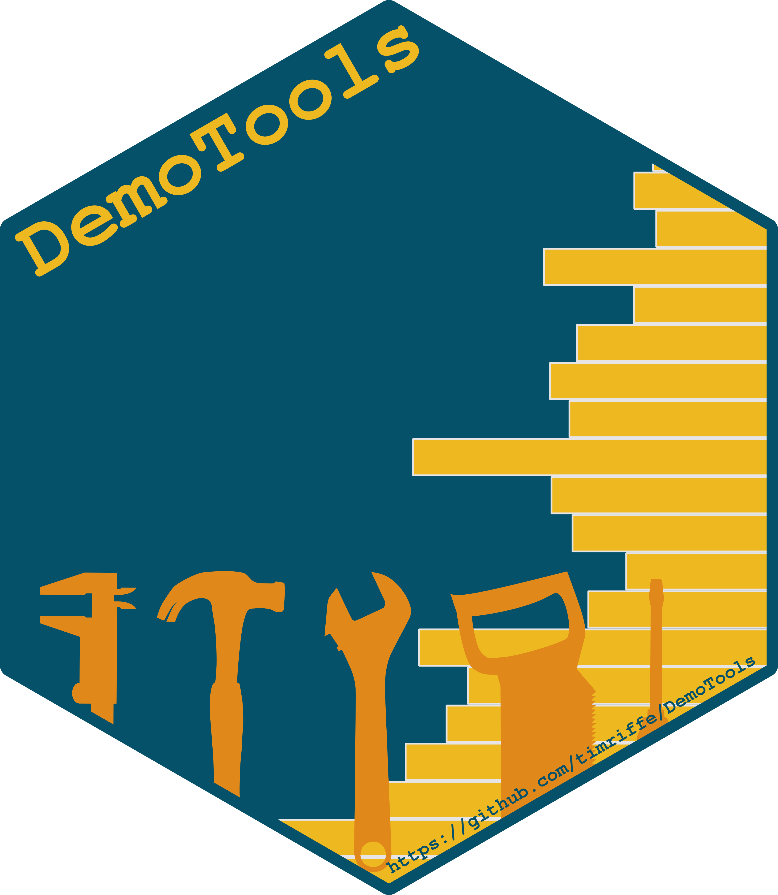
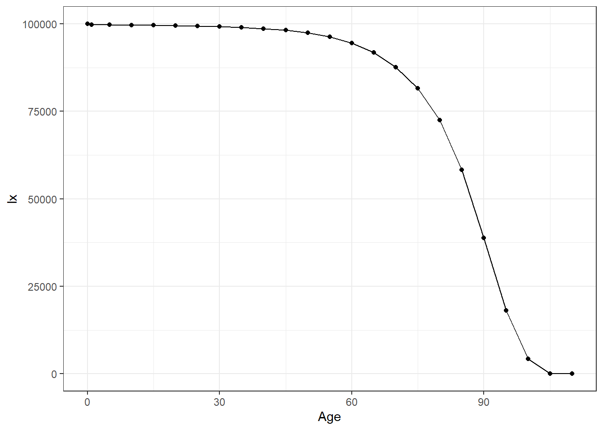
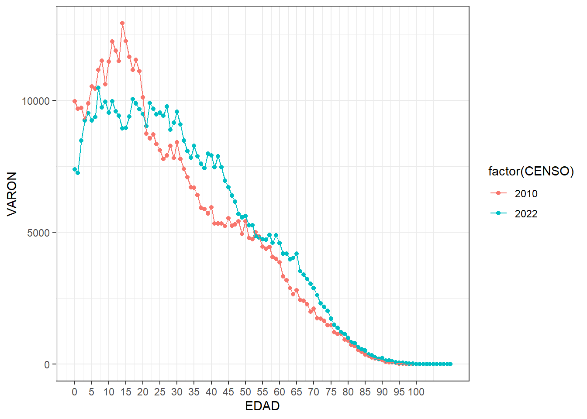
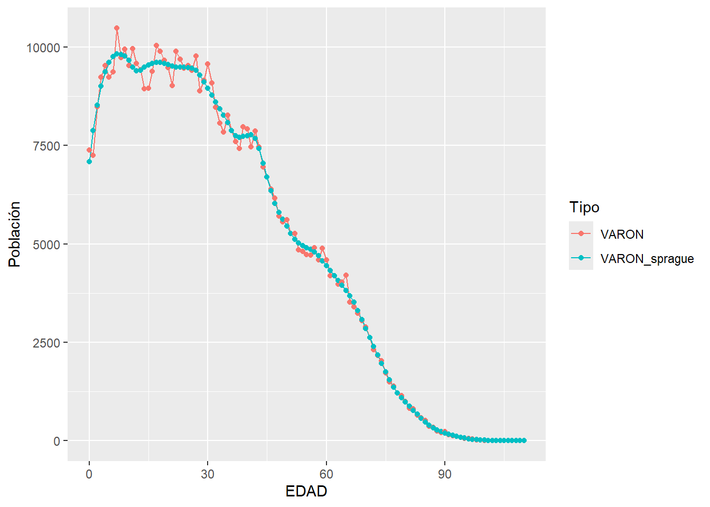

4 Funciones
4.1 DemogRafía
¿Qué es la demografía? La demografía estudia el tamaño, composición, distribución, dinámica y cambios de la población.
En palabras de algunos autores: (tomado de Carmichael, 2016):
Guillard (1855; citado en Shryock, Siegel and Associates, 1973): “la historia natural y social de la especie humana o el conocimiento matemático de las poblaciones, de sus cambios generales y de su condición física, civil, intelectual y moral”.
Hauser y Duncan (1959): La demografía es el estudio del tamaño, la distribución territorial y la composición de la población, los cambios en la misma y los componentes de dichos cambios, que pueden identificarse como natalidad, mortalidad, movimiento territorial (migración) y movilidad social (cambio de estado).
Weeks (1994): La demografía se refiere a prácticamente todo lo que influye, o puede ser influenciado por el tamaño de la población, su distribución, procesos, estructura o características de ella.
Preston et. al, (2001): cambios en su tamaño, sus tasas de crecimiento y su composición. La demografía es uno de las disciplinas de las ciencias sociales donde los análisis a nivel micro y macro encuentran quizás su más completa y satisfactoria articulación.
Palabras clave: especie + tamaño + composición + territorio + estado + cambio + micro/macro.
A lo largo del taller, veremos cómo las funciones en R nos permiten formalizar procesos demográficos y automatizar cálculos que usamos todos los días.
4.2 Funciones
Una función es un bloque de código reutilizable, diseñado para tomar uno o más argumentos y devolver un resultado. Permite encapsular un procedimiento -que recibe argumentos y genera una respuesta- para evitar repetir código y reducir errores.
En general, si un bloque de código es copiado y pegado en más de una vez en un espacio de trabajo entonces merece su función. Las funciones en R contienen:
un nombre
argumentos (input) → ¿Qué necesita para funcionar?
cuerpo → código que elabora una respuesta en función de argumentos
respuesta/resultado (output) → Un objeto que devuelve
Su estructura general es:
nombre_de_función <- function(argumento1, argumento2) {
# cuerpo de la función
resultado <- arg1 + arg2
return(resultado)
}
# se enuncia entre llavesR siempre devuelve el último valor evaluado, pero usar return() hace la función más clara.
Por ejemplo, si queremos tener una función que nos diga cuantos años cumplidos tendrá una persona de edad x en t años:
edad_en_t_anios <- function(x, t){
x_en_t_años <- x + t
# este valor solo existirá en este contexto (scoping)
return(x_en_t_años)
}
# Juan tiene 35. ¿Cuantos tendrá en 10 años?
edad_en_t_anios(35, 10) # no nombré los argumentos porque respeté el orden## [1] 45## [1] 64 63 37 35 30 30Las funciones pueden tener valores por defecto. Por ejemplo:
edad_en_t_anios <- function(x, t = 5){
x_en_t_años <- x + t
return(x_en_t_años)
}
edad_en_t_anios(x = 35) #ahora t=5 por defecto## [1] 404.3 Crecimiento
Tenemos una población que en el año 2020 era de 50.000 personas y en 2030 era de 60.000. Nos preguntan cual sería la población a 2035. Existen distintas formas en que podemos modelar su crecimiento total a partir de dos puntos observados en el tiempo. En términos generales para un momento 0 y un momento t, debemos obtener primero el ritmo al que crece, es decir su tasa anual promedio \(\overline{r}(0,t)\):
| Supuesto | \(N(t)\) | \(\overline{r}(0,t)\) |
|---|---|---|
| Lineal | \(N(0) * (1+r*t)\) | \([\frac{N(t)}{N(0)}-1]/t\) |
| Exponencial | \(N(0) * e^{r * t}\) | \(\ln(\frac{N(t)}{N(0)})/t\) |
Construyamos una función para modelar su crecimiento y poder interpolar/extrapolar según el modelo lineal. Una función debe ser diseñada para ser aplicable a muchos casos específicos.
Llamaremos h a la distancia desde la primera observación para la que deseamos obtener la nueva población.
Nuestra respuesta a la pregunta inicial podría ser, siendo h = 15:
# ¿qué población habrá en 2035?
N2035 <- crecim_lineal(N0 = 50000, Nt = 60000, t = 10, h = 15)
# miremos un gráfico
plot<-data.frame(Año = c(2020, 2030, 2035),
N = c(50000, 60000, N2035)) %>%
ggplot(aes(Año, N)) +
geom_line() +
geom_point()
plot
¿Si quisiera tener opciones al momento de calcular el crecimiento? Por ejemplo, que sea de tipo lineal o exponencial. Incluyamos el argumento tipo y utilicemos el condicional if para posicionarnos en el modelo que se quiera.
crecim <- function(N0, Nt, t, h, tipo = "lineal"){
# si se quiere el modelo exponencial
if(tipo == "exponencial"){
r <- log(Nt/N0)/t
Nh <- N0 * exp(r*h)
}
# si se quiere el modelo lineal
if(tipo == "lineal"){
Nh <- crecim_lineal(N0, Nt, t, h) # una función dentro de otra!!!
}
return(Nh)
}Veamos que obtuvimos con las dos opciones:
N2035 <- data.frame(N2035_lineal = crecim(50000, 60000, 10, 15, tipo = "lineal"),
N2035_exp = crecim(50000, 60000, 10, 15, tipo = "exponencial"))
data.frame(Año = c(2020, 2030, 2035, 2035),
N = c(50000, 60000, N2035$N2035_lineal, N2035$N2035_exp),
Tipo = c("Observado", "Observado", "lineal", "exponencial")) %>%
ggplot(aes(Año, N)) +
geom_point(aes(shape = Tipo, color=Tipo)) 
El condicional puede pensarse como if y else también, ¿cómo sería?
¿Y si tuviéramos un vector de población por edad? Podemos tener una tasa \(\overline{r}(0,t)\) por cada edad.
# crecimiento por edad
N2035_edad <- data.frame(Edad = c("0-14", "15-64", "65+"),
N2020 = c(20000, 20000, 10000),
N2030 = c(25000, 30000, 5000)) %>%
mutate(N2035_lineal = crecim(N2020, N2030, 10, 15, tipo = "lineal"),
N2035_exp = crecim(N2020, N2030, 10, 15, tipo = "exponencial"))
# hagamos tidy el data.frame primero
N2035_edad %>%
pivot_longer(cols = !Edad, names_to = "Tipo", values_to = "N") %>%
ggplot(aes(Edad, N, fill = Tipo)) +
geom_bar(stat = "identity", # no trates de ser un histograma
position = "dodge") # posición lado a lado
El poner a disposición de otros usuarios tus funciones requiere controlar los errores posibles, entre otras cosas por ingresar como argumentos objetos no esperados (por ejemplo, un objeto character en algunos de los primeros argumentos). Ejemplo: hagamos no aceptable el ingreso de un objeto character como argumento en N0, Nt, t ni h:
crecim_lineal_check <- function(N0, Nt, t, h){
# check argumentos
if(is.character(N0) | is.character(Nt) | is.character(t) | is.character(h)){
stop("Ingresaste un texto en algún argumento")
}
# función previa
r <- (Nt/N0-1)/t
Nh <- N0 * (1+r*h)
return(Nh)
}
# probemos
crecim_lineal_check(50000, 60000, 10, "hola")Buenas prácticas
Dejamos algunas mínimas recomendaciones para tener en cuenta al construir funciones:
usar nombres descriptivos
incluir comentarios
validar argumentos
devolver siempre un objeto claro
preferir mensajes de error comprensibles
4.3.1 Actividad
Crear una función que sume un vector de población y devuelva el resultado en miles.
Siguiendo el ejemplo trabajado: ¿cuál sería la población al 2027 bajo el supuesto de crecimiento exponencial? ¿Es equivalente interpolar cada edad y luego sumar? ¿Y para el tipo lineal?
Crear una función que informe la edad modal, por ejemplo para
data.frame(Edad = c(0,4,7,10), Casos = c(2, 6, 9, 0))debería devolver la edad 7.Obtener una función que permita conocer en cuantos años (h) se duplicará la población respecto al primer valor observado, bajo el supuesto de crecimiento lineal y exponencial. (Ayuda: obtén \(r\) y luego despeja \(h\) para que \(N_h=N_0*2\)).
4.4 Estandarizando
Entre los intentos por discriminar el efecto de la estructura por edad en el indicador de Tasa Bruta de Mortalidad \(TBM(t)=\frac{D(t)}{N(t)}\) (defunciones sobre población expuesta1) se encuentra el clásico método de estandarización directa (Swanson & Siegel, 2004).
En principio, la \(TBM(t)\) de una población puede ser expresada como el promedio ponderado de las tasas específicas de mortalidad \(M_x(t)=\frac{D_x(t)}{N_x(t)}\) por el peso poblacional de cada edad \(C_x(t)=\frac{N_x(t)}{N(t)}\):
\[ TBM(t) = \frac{D(t)}{N(t)}= \sum_{x>=0}{M_x(t)\,C_x(t)} \]
Las poblaciones más envejecidas registran una mayor frecuencia de muertes simplemente porque concentran más personas en edades avanzadas, según la distribución \(C_x(t)\). Esto no implica necesariamente que tengan un nivel de mortalidad más alto. El proceso de estandarización reemplaza \(C_x(t)\) por otra distribución que permita la comparación entre distintas poblaciones: sería equivalente a asignarle una misma pirámide poblacional a ambas poblaciones. Si llamamos a esta distribución estándar tenemos \(C^S_x(t)\) y podemos calcular para dos poblaciones cualquiera \(A\) y \(B\) su Tasa Estandarizada de Mortalidad:
\[ TSM^A(t) = \sum_{x>=0}{M^A_x(t)\,C^S_x(t)}\\ TSM^B(t) = \sum_{x>=0}{M^B_x(t)\,C^S_x(t)}\\ \]
Lo que permite comparar \(TSM^A(t)\) con \(TSM^B(t)\): \(TSM^A(t) \lessgtr TSM^A(t)\). Pero vayamos al ejemplo!!!
Obtengamos la población y defunciones de Chile, Japón y Polonia del año 2000, 2010 y 2015 leyendo la tabla “Chile_Japon_Polonia.csv” en la carpeta “data”.
Enfoquémonos en el 2015 para comparar los tres países. Japón presenta una \(TBM\) mayor pero atribuible a otro estadío en su envejecimiento según la porción de población de 65 años y más.
db <- db %>% filter(Year == 2015)
db %>%
group_by(Country) %>%
summarise(TBM = sum(D)/sum(N)*1000,
porc_65_mas = sum(N[Age>=65])/sum(N)) ## # A tibble: 3 × 3
## Country TBM porc_65_mas
## <chr> <dbl> <dbl>
## 1 Chile 6.04 0.113
## 2 Japon 10.7 0.278
## 3 Polonia 10.5 0.166Y esto es visible en la jerarquía de las tasas de mortalidad por edad:
# creamos la varibale con las tasas de mortalidad específicas
db <- db %>% mutate(M = D/N)
ggplot(db) +
geom_step(aes(x=Age,y=M,color=Country))+
scale_y_log10()+
scale_x_continuous(breaks = seq(0,110,10), labels = seq(0,110,10)) +
labs(caption = "Human Mortality Database")+
theme_bw()
Estandaricemos utilizando el promedio de la estructura por edad de los tres:
C_x_promedio <- db %>%
group_by(Age) %>%
summarise(c_x = sum(N)/sum(db$N))
db %>%
left_join(C_x_promedio) %>%
group_by(Country) %>%
summarise(TSM = sum(M * c_x)*1000)## # A tibble: 3 × 2
## Country TSM
## <chr> <dbl>
## 1 Chile 13.0
## 2 Japon 9.06
## 3 Polonia 15.3!Ahora sí! El indicador nos muestra un nivel de mortalidad para 2015 mayor en Polonia, seguido de Chile y Japón. Cabe aclarar que en este sentido el mejor indicador resumen es la esperanzada de vida (\(e_x\)), que se estima a partir de la construcción de una tabla de vida (Preston y otros, 2001).
¿Cómo sería una función que reciba una tabla con las variables País, N y D y devuelva las \(TBM\) y las \(TSM\)?
4.4.1 Actividad
Responder la pregunta previa con los mismos datos utilizados arriba.
Con los datos de la tabla “Chile_Japon_Polonia.csv”: ¿qué se puede decir sobre la evolución de la mortalidad de Polonia en los años 2000, 2010 y 2015? ¿Bajó o creció?
Graficar la distribución de las defunciones por edad (colocando cada punto en la edad media del intervalo, por ejemplo para el grupo 5-10, en 7.5).
4.5 Migración
En esta oporunidad, vamos a crear una función que nos permita calcular la Tasa Neta de Migración (TNM).
La TNM mide la diferencia entre inmigrantes y emigrantes en relación con la población media del período. Se expresa por cada 1.000 habitantes.
La fórmula es:
\[ TNM = \frac{I - E}{P} \times 1000 \]
donde:
- I = inmigrantes
- E = emigrantes
- P = población media del período
Primero vamos a crear un data frame simple con datos ficticios de Argentina:
datos_mig <- data.frame(
inmigrantes = 25000,
emigrantes = 40000,
poblacion_medio_periodo = 46000000
)
datos_mig## inmigrantes emigrantes poblacion_medio_periodo
## 1 25000 40000 4.6e+07Creamos la función con sus validaciones:
tasa_neta_migracion <- function(inmigrantes, emigrantes, poblacion_medio_periodo) {
if (poblacion_medio_periodo <= 0) {
stop("La población media debe ser mayor que cero.")
}
if (any(c(inmigrantes, emigrantes) < 0)) {
stop("Los flujos migratorios no pueden ser negativos.")
}
tasa <- (inmigrantes - emigrantes) / poblacion_medio_periodo * 1000
return(tasa)
}Aplicamos la función a nuestros datos:
tasa_neta_migracion(
datos_mig$inmigrantes,
datos_mig$emigrantes,
datos_mig$poblacion_medio_periodo
)## [1] -0.3260874.6 Fecundidad
En esta sección vamos a trabajar con funciones para calcular:
Tasas Específicas de Fecundidad (TEF)
Tasa Global de Fecundidad (TGF)
Las Tasas Específicas de Fecundidad (TEF) representan la intensidad reproductiva de las mujeres en grupos quinquenales de edad.
La fórmula general es:
\[ TEF_x = \frac{Nacimientos \; en \; mujeres \; de \; edad \; x}{Mujeres \; de \; edad \; x} \times k \]
tasa_especifica_fecundidad <- function(nacimientos, mujeres, k = 1000){
# Validaciones
if(length(nacimientos) != length(mujeres)){
stop("Los vectores de nacimientos y mujeres deben tener la misma longitud.")
}
if(any(nacimientos < 0) | any(mujeres < 0)){
stop("Los valores deben ser positivos.")
}
# Cálculo
tef <- (nacimientos / mujeres) * k
return(tef)
}Si nosotros le damos información sobre nacimientos y cantidad de mujeres, podemos calcular la TEF de un momento específico. A continuación aplicamos la función con datos ficticios:
nac <- c(42000, 60000, 58000, 45000, 30000, 15000, 5000)
muj <- c(800000, 750000, 720000, 700000, 680000, 660000, 640000)
tef <- tasa_especifica_fecundidad(nac, muj)
tef## [1] 52.50000 80.00000 80.55556 64.28571 44.11765 22.72727 7.81250Si lo queremos graficar:
edades <- c("15–19", "20–24", "25–29", "30–34", "35–39", "40–44", "45–49")
df_tef <- data.frame(
grupo_edad = factor(edades, levels = edades),
tef = tef
)
ggplot(df_tef, aes(x = grupo_edad, y = tef)) +
geom_line(group = 1) +
geom_point(size = 3) +
labs(
title = "Tasas Específicas de Fecundidad (TEF)",
x = "Grupo de edad",
y = "Tasa por 1.000 mujeres"
)
4.7 Funciones demográficas en paquetes demográficos
Estamos entrando en zona de utilización de funciones demográficas de paquetes.
Proyecto DemoTools. Su instalación demora un poco:

library(devtools)
install.packages("rstan", repos = c("https://mc-stan.org/r-packages/", getOption("repos")))
devtools::install_github("timriffe/DemoTools")4.7.1 Tablas de mortalidad
Construir una función que produzca una tabla de mortalidad a partir de un set de tasas por edad de mortalidad es un lindo ejercicio de programación en R. Pero por suerte DemoTools tiene una muy buena implementación. Acá para Japón 2015:
jpn_2015 <- db %>% filter(Country == "Japon", Year == 2015)
# obtengo la tabla
library(DemoTools)
tm_jpn_2015 <- lt_abridged(nMx = jpn_2015$M, Age = jpn_2015$Age)
# veamos la función de sobrevivencia:
tm_jpn_2015 %>%
ggplot(aes(Age, lx)) +
geom_point() +
geom_line()+
theme_bw()
Repasemos sus argumentos, como OAGNew, extrapLaw y a0rule. También puede graduar, es decir pasar a edades simples.
4.7.1.1 BONUS
Aquí va el ejemplo de una función de tabla de vida acorde a las necesidades propias: con un grupo de edad 1-9 y que devolviera también Dx y Nx (para luego calcular intervalos de confianza)
lifetable <- function(deaths,pop,age, sex = "m"){
nmx <- deaths/pop
m0 <- nmx[1]
# a0 de Coale & Demeny (1983) en Preston, Heuveline & Guillot (2001)
a0 <- if(sex == "m") {.0425+2.684*m0} else {0.053+2.8*m0}
# 4.5 para el grupo 1-9
nax <- c(a0, 4.5, rep(2.5, times = 15))
n <- c(diff(age),NA)
nqx <- n*nmx / (1+(n-nax)*nmx)
nqx[length(age)] <- 1
npx <- 1 - nqx
lx <- rep(NA,length(nqx))
lx[1] <- 100000
for(i in 1:length(n)){
lx[i+1] <- lx[i]*npx[i]
}
lx <- lx[1:length(n)]
ndx <- lx*nqx
ndx[length(age)] <- lx[length(age)]
nLx <- ndx/nmx
nax[length(age)] <- nLx[length(age)]/lx[length(age)]
# Tx
Tx = rev(cumsum(rev(nLx)))
# ex
ex <- Tx/lx
ex[length(age)] <- nax[length(age)]
lifetable <- data.frame(age=age,
n=round(n,0),
nmx=round(nmx,5),
nqx=round(nqx,5),
npx=round(npx,5),nax=round(nax,2),
ndx=round(ndx,0),lx=round(lx,0),
Lx=round(nLx,0),
Tx=round(Tx,0),
ex=round(ex,5),
Dx=deaths,
Nx=pop)
return(lifetable)
}4.7.2 Evaluación de declaración de edad
Con el índice de Myers veamos si en Chaco mejoró la declaración por edad de varones entre los censos 2010 y 2022. Un valor del indicador que tienda a 0 indica una mejor declaración (bajo los supuesto del método).
pob_chaco <- readxl::read_xlsx("data/Pob2010y2022_prov.xlsx", sheet=1) %>%
filter(PROV_NOMBRE == "CHACO")
pob_chaco %>%
ggplot(aes(EDAD, VARON, color=factor(CENSO))) +
geom_point() +
geom_line() +
scale_x_continuous(breaks = seq(0,100,5), labels = seq(0,100,5)) +
theme_bw()
4.7.3 Graduación de población por edad simple
El método de Sprague desagrega por edad simple conteos agrupados por edad quinquenal. Veamos como funciona para los varones de Chaco en el año 2022. Primero agregando, y luego aplicando el método.
# me quedo con 2022
pob_chaco_2022 <- pob_chaco %>% filter(CENSO == 2022)
# agrupo la población por grupos quinquenales
pob_chaco_2022_quinquenal <- pob_chaco %>%
filter(CENSO == 2022) %>%
mutate(EDAD_q = trunc(EDAD/5) * 5) %>%
group_by(EDAD_q) %>%
summarise(VARON = sum(VARON))
# aplico sprague
pob_chaco_2022_sprague <- graduate(pob_chaco_2022_quinquenal$VARON, pob_chaco_2022_quinquenal$EDAD_q, method = "sprague")
# junto
pob_chaco_2022_simple <- pob_chaco_2022 %>%
full_join(tibble(EDAD = 0:110, VARON_sprague = pob_chaco_2022_sprague)) %>%
select(EDAD, VARON, VARON_sprague) %>%
pivot_longer(!EDAD, names_to="Tipo", values_to="Población")
# visualizo
pob_chaco_2022_simple %>%
ggplot(aes(EDAD, Población, color=Tipo)) +
geom_line() +
geom_point()
La Tasa Global de Fecundidad (TGF) estima el número promedio de hijos que tendría una mujer si se mantuvieran las TEF observadas.
La fórmula general es:
\[ TGF = 5 \cdot \sum_{x} TEF_x \]
tasa_global_fecundidad <- function(nacimientos, mujeres, k = 1){
# Primero calculamos las TEF
tef <- tasa_especifica_fecundidad(nacimientos, mujeres, k)/1
# Sumamos e incorporamos el ancho del intervalo (5 años)
tgf <- sum(tef) * 5
return(tgf)
}Seguimos con el ejemplo anterior:
## [1] 1.759993#Resultados
data.frame(
grupo_edad = edades,
nacimientos = nac,
mujeres = muj,
tef = round(tef, 2)
)## grupo_edad nacimientos mujeres tef
## 1 15–19 42000 800000 52.50
## 2 20–24 60000 750000 80.00
## 3 25–29 58000 720000 80.56
## 4 30–34 45000 700000 64.29
## 5 35–39 30000 680000 44.12
## 6 40–44 15000 660000 22.73
## 7 45–49 5000 640000 7.81## [1] "TGF estimada: 1.76"Para ser más rigurosos en la notación \(N(t)\) debería ser expresado como \(\overline{N}(t,t+1)\), pero simplificaremos un poco para enfocarnos en lo que haremos en R. Para más detalles ver Preston y otros (2001)↩︎